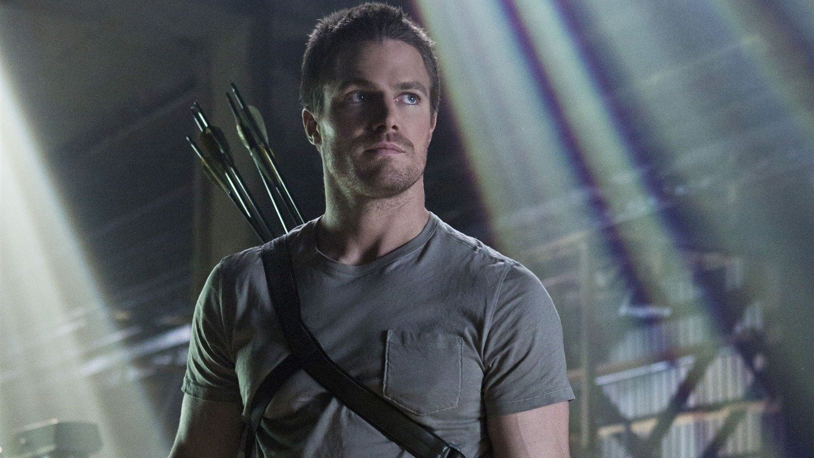
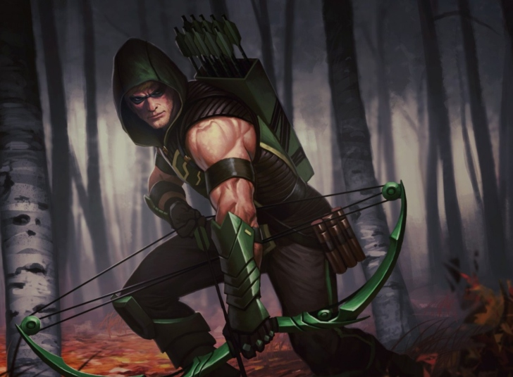
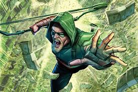

- Publicidad
- En cómics y novelas

- Publicidad

- Videojuego:
En el videojuego de 2013, Injustice: Gods Among Us aparece un traje de Green Arrow basado en el Oliver Queen interpretado por Stephen Amell. Dicho traje fue recibido como regalo de bonificación a para los primeros 5.000 votantes de la competencia, pero más tarde fue lanzado como contenido de descarga gratuita. Además Amell presta su voz para ese traje en particular.
- Blood rush:
El 6 de noviembre de 2013, una serie spin-off titulada Blood Rush, fue estrenada en televisión de forma simultánea a la emisión de la serie, así como vía Internet. La serie es presentada por Bose Corporation y promociona productos de dicha empresa, es filmada en Vancouver, al igual que la serie principal. Cuenta con las actuaciones de Emily Bett Rickards, Colton Haynes y Paul Blackthorne como Felicty Smoak, Roy Harper y Quentin Lance, respectivamente. Los episodios muestran a Roy llegando a Queen Consolidated para tener un encuentro con Oliver. Felicity le dice que espere en el vestíbulo. Mientras Roy sale, Quentin llama a Felicity y le cuenta que la muestra de sangre del vigilante que obtuvo la policía de Starling City y Felicity destruyó, ha resurgido. Entonces Felicity llama a Roy usando el codificador de voz de Oliver y le pide que irrumpa en el laboratorio para obtener la muestra.
- En cómics y novelas

La versión de Arrow de Oliver Queen apareció por primera vez en el cómic precuela de 2012 "Arrow # 1: Special Edition". El cómic fue lanzado antes de que la serie se emitiera y se vincula con la primera temporada de la serie de televisión. El cómic se desarrolló más tarde en una serie de cómics digitales en curso titulada Arrow que duró 36 capítulos entre 2012 y 2013 y contó con varias historias. Al año siguiente, el personaje apareció en Arrow: Season 2.5, una serie de cómics quincenal que colmó la brecha entre el final de la segunda temporada y el comienzo de la tercera.
En 2015, Oliver apareció en la novela vinculada, Arrow: Vengeance, escrita por Oscar Balderrama y Lauren Certo. En 2016 apareció en la novela crossover The Flash: The Haunting of Barry Allen escrita por Susan y Clay Griffith, y en 2017 en la conclusión del crossover, Arrow: A Generation of Vipers, de los mismos autores. En 2018, Oliver apareció en la novela vinculada Arrow: Fatal Legacies, en coautoría de Marc Guggenheim y James R. Tuck, publicada en enero de 2018, que colmó la brecha entre el final de la quinta temporada y el estreno de la sexta.